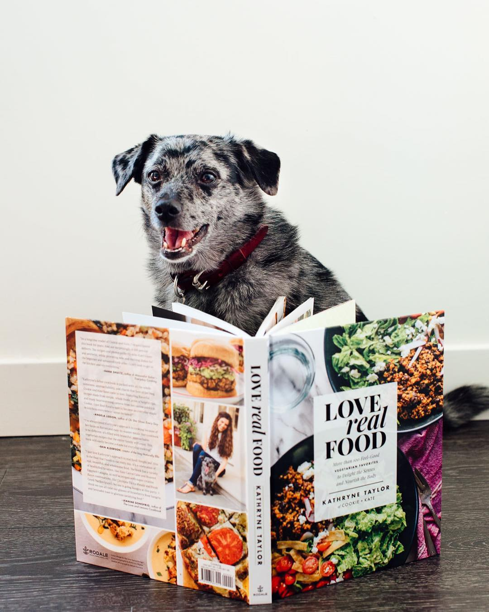

Andrea Bemis and her husband own a six-acre farm in Parkdale, Oregon. That’s where the majority of the ingredients for her simple, healthy farm-to-table recipes come from. You can feel the labor and love that’s gone into every dish in these beautiful photos.
Blogger Chungah Rhee’s specialty is healthy, quick (seriously—we’re talking as few as five minutes for some of these) recipes that get you in and out of the kitchen, without sacrificing food quality or taste. We’re guessing she spends a little more time on her photos, though—because they’re like (incredibly appetizing) works of art.
A true story of authentic success, Jaclyn Bell is a mom and self-taught cook who started posting about the foods she cooked for her family after being inspired by other people doing the same thing. Her recipes and photos quickly garnered attention and followers, and the blog (and IG feed) features a nice balance of sweet and savory concoctions.
Based in Toronto and cooking out of a closet-sized kitchen—no joke, check out a photo here—Kevin Lynch began his blog with a simple mission: never to eat a boring meal again. From there, his site and fan base (aka the number of people amazed by what he’s able to whip up in such a minuscule space) grew, and his thousands of followers now enjoy daily ’grams of colorful, flavor-packed recipes.
Dana Shultz stays true to her blog’s claim to fame, creating truly minimalist recipes that require 10 ingredients or less, one bowl, or 30 minutes to prepare. They’re also mostly plant-based and gluten-free, making them good for you in addition to gorgeous. Is it any wonder Shultz now has 377,000 followers and counting, plus a book deal?
Macedonian-born mom of two Katerina Petrovska started out, like many food bloggers, throwing together ingredients in a pot or pan, and seeing what happened. That natural curiosity turned into photographing and writing about the recipes she came up with or adapted. Now, you’ll find a medley of traditional, sweet, fusion, and Macedonian-American food on her blog and Instagram feed—all served up in style, humor, and liveliness.
Ali Ebright started blogging out of her kitchen in Kansas City in 2009, and Gimme Some Oven has since grown to be one of the food world’s leading blog sites, featuring easy, tasty, and healthy dishes, many of which cater to specific dietary needs. She’s also become a talented photographer, and the bright, vibrant shots she posts of fruit salad, tacos, pastas, cookies, cocktails, and way more are guaranteed to make your mouth water.
Blogger Kathryne Taylor—aka Kate—is also based in Kansas City, and her blog (which is also named after her adopted mutt, Cookie) focuses on whole foods and vegetarian recipes, something no one seems to be able to get enough of in 2016. She’s a self-proclaimed food-policy and nutrition junkie, and chooses not to cook meat, though chances are, with all of the fresh, delicious produce and grain recipes she features on her blog and Instagram, you won’t even miss it.

These were our top picks! If you know someone better? Do let us know!
CONTACT
Fan? Drop a note!
Chicago, US
Phone: +00 991561234
Email: legal@foodelico.com
 Kshitiz Goel
Kshitiz Goel